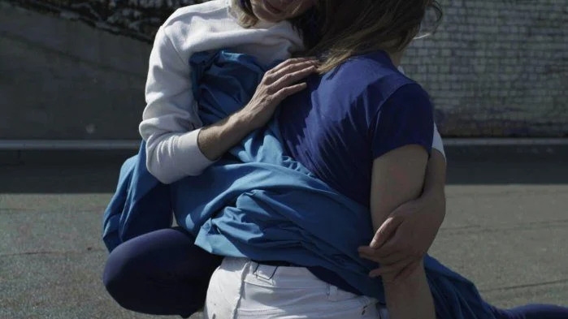
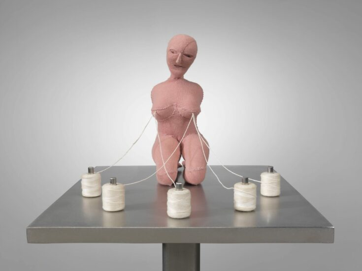
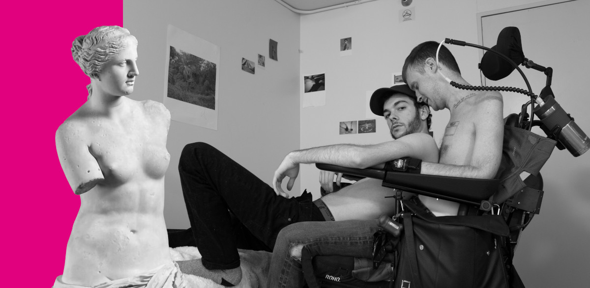

Interesting Exhibitions in Berlin this autumn
A city full of art

What's going on in the art world and which Berlin exhibitions should you check out this autumn? Here you will find my recommendations!
No one survives a real conversation
No one survives a real conversation is a joint exhibition by the artist Nicole Wendel and performer Kirstin Burckhardt, which deals with the nature of friendship
read more...Louise Bourgeois: The Woven Child
A difficult relationship with her father and a deep love for her mother inspired Louise Bourgeois’ great artistic output... In the show “The Woven Child” her late textile work comes into focus.
read more...Queering the Crip, Cripping the Queer
“Queering the Crip, Cripping the Queer” is the first international exhibit exploring the multiple historical, cultural, and political intersections of queerness and disability.
read more...